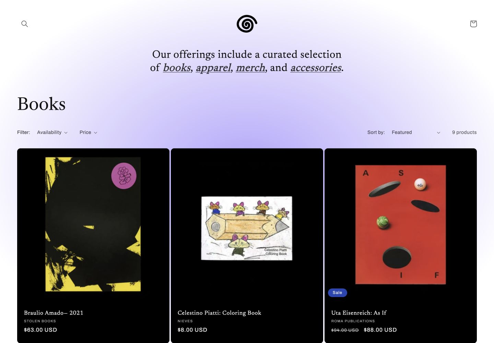
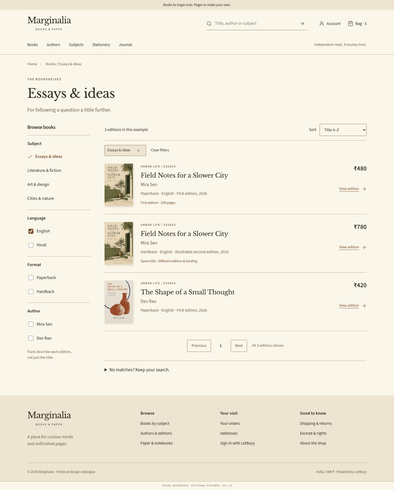
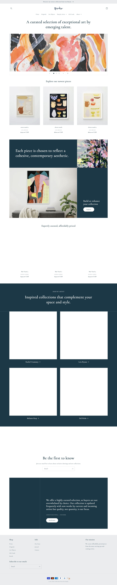
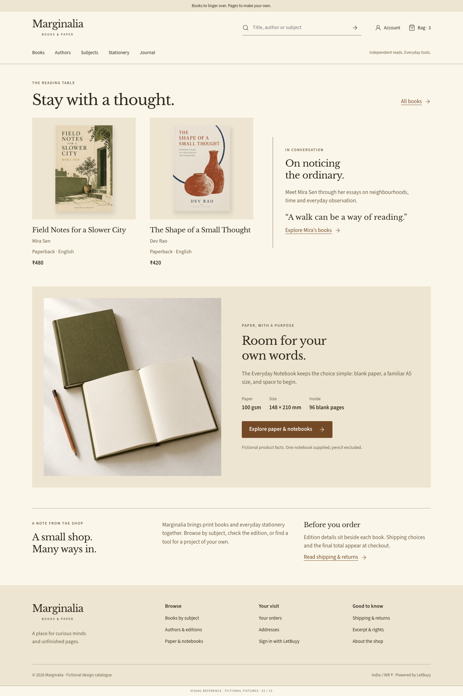
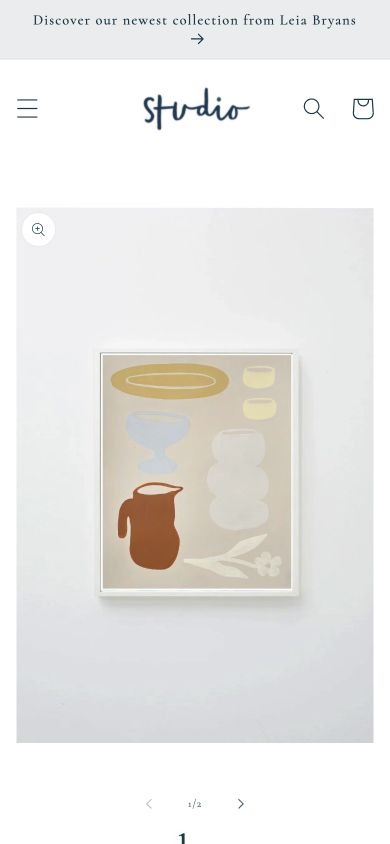
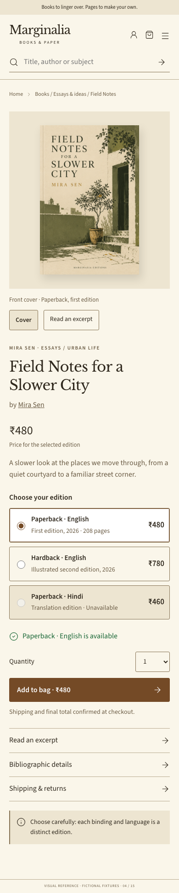

Saved Shopify public captures: 22 October 2026. Local proposed design: v1, 23 October 2026. Equal display widths within each pair; original pixels unchanged. These comparisons do not establish conversion, accessibility or successful cart behavior.
Evidence and limitations · Original neutral task comparison · Storybook


Retain title/creator/price and conventional filter entry. Replace large media cards with narrow covers, a subject rail and visible edition/language/binding facts. Required: C typed bibliography/public projection and real paginated facets. Hypothesis: these facts help prevent wrong-edition selection; no user outcome measured.


Retain creator-led discovery and intact product proportions. Marginalia pairs author context with books and an independent stationery module; paper size/weight is explicit. Required: A navigation/collection bindings plus C author and stationery facts. The different scroll states are labelled; this pair compares modules rather than equating opening-screen exposure.


Retain object integrity, named selection and price. A book requires a compact cover, edition/language choice and reading continuation; a stationery product requires paper facts. Studio product recheck was inaccessible to the text web tool; saved evidence remains dated. No remote content is used as Marginalia merchandise.
Home · Collection · Product. The same source is rendered with imagery, theme branding and color suppressed; bibliographic hierarchy remains.